A telecom provider loses one in four customers. Two questions, in order:
Who is churning, and what characterises them? An exploratory analysis of every
feature against the 26.6% baseline churn rate.
Can we predict it before it happens? A predictive model, delivered as a risk list
carrying a churn probability for each customer.
7,032
customers analyzed
26.6%
baseline churn rate
0.8437
best CV ROC-AUC (LightGBM)
The Data
IBM's Telco Churn dataset: 7,032 rows × 21 columns — one row per customer, one binary
label, 19 predictors. Three cleaning steps were needed before any plotting:
Type fix:TotalCharges was stored as text.
pd.to_numeric(errors='coerce') exposed 11 hidden missing values that
info() had reported as complete.
Missing values: those 11 rows are 0.16% of the data, so they were dropped —
7,043 → 7,032 rows.
Engineered features:tenure_group (12-month cohorts) and
num_services (count of the 6 optional add-ons, a stickiness proxy).
The data is imbalanced, majority class is 'no churn', the baseline churn rate is 26.6%.
1 · Univariate Analysis
One column at a time — the numeric columns as distribution plus boxplot, the categorical ones as each
level's share of customers.
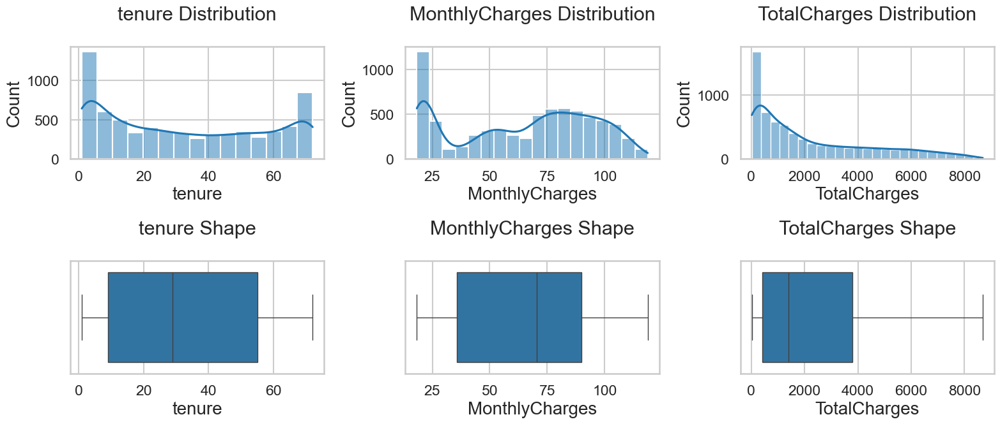
The three numeric columns — histogram + KDE above, boxplot
below
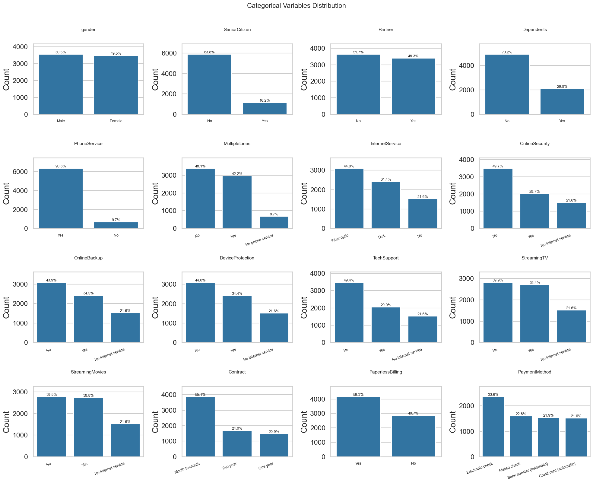
All 16 categorical columns — each level's share of customers
tenure and MonthlyCharges are bimodal — two products, not one price curve. No
outliers.
55.1% are month-to-month — most of the base has no commitment.
21.6% have no internet — one group, counted six times: it fills the "No internet
service" level in all six add-on columns, and it is the $20 spike in MonthlyCharges.
Everything else is reasonably balanced.
2 · Bivariate Analysis
Each feature against churn — first as raw counts, then as a rate against the 26.6% baseline.
Categorical Analysis
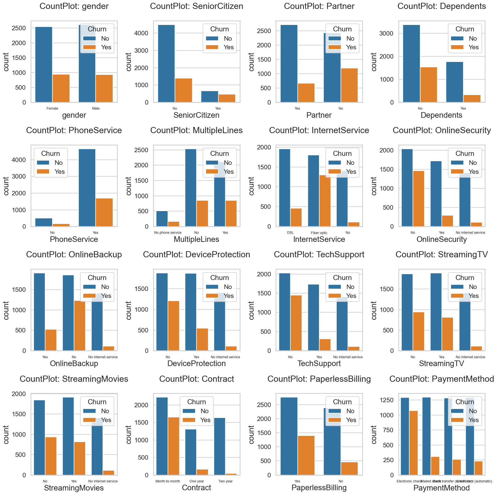
Stayed vs left as counts — shows which levels are too thin to draw
conclusions from
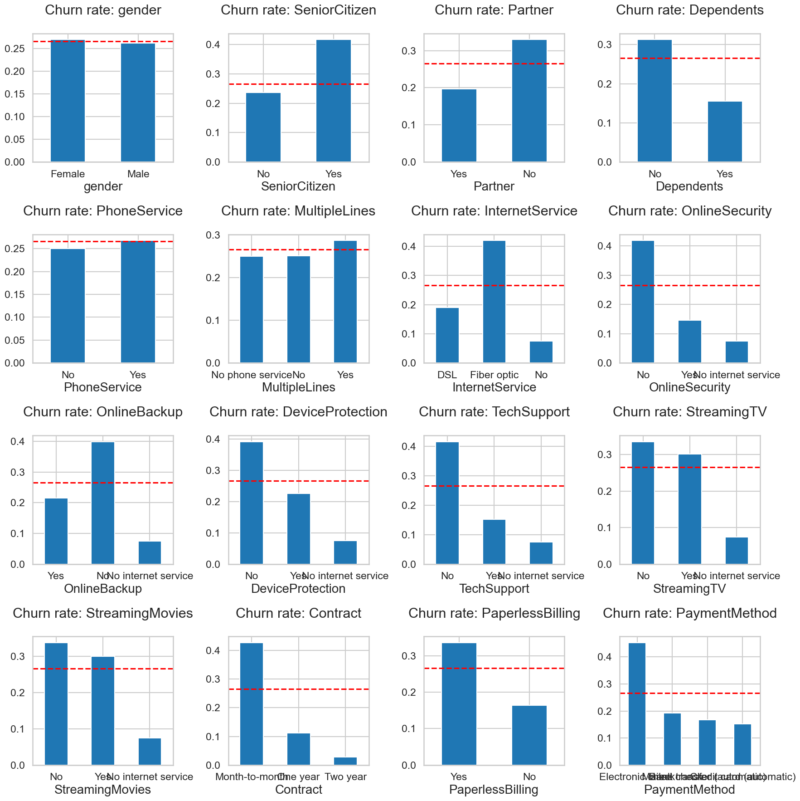
The same 16 features as churn rate per level. Red dashed line
= 26.6% baseline.
Group
Feature
Higher churn
Lower churn
Demographic
gender
Female — 26.5%
Male — 26.2%
SeniorCitizen
Senior — 41.7%
Non-senior — 23.7%
Partner
No — 33.0%
Yes — 19.7%
Dependents
No — 31.3%
Yes — 15.5%
Account
Contract
Month-to-month — 42.7%
Two year — 2.8%
PaymentMethod
Electronic check — 45.3%
Credit card — 15.2%
PaperlessBilling
Yes — 33.6%
No — 16.3%
Services
InternetService
Fiber optic — 41.9%
No — 7.4%
OnlineSecurity
No — 41.8%
Yes — 14.6%
TechSupport
No — 41.6%
Yes — 15.2%
StreamingTV / Movies
No — ~33.6%
Yes — ~30.0%
PhoneService / MultipleLines
≈ baseline
≈ baseline
Demographics shift churn, but mildly — seniors 41.7% vs 23.7%, no partner 33.0% vs
19.7%, no dependents 31.3% vs 15.5%. Smaller households churn more, and none of it is actionable.
Contract is the strongest feature — 42.7% / 11.3% / 2.8%, a fifteen-fold spread
from one column.
Payment friction is next — electronic check stands alone at 45.3% (every other
method sits at 15–19%), and paperless billing adds 33.6% vs 16.3%.
Protective add-ons matter, streaming ones don't — ~40% without vs ~15–22% with;
streaming moves churn 3–4 points.
Fiber optic 41.9% vs DSL 19.0% — the premium product loses more customers.
Flat: gender, PhoneService, MultipleLines.
Numerical Analysis
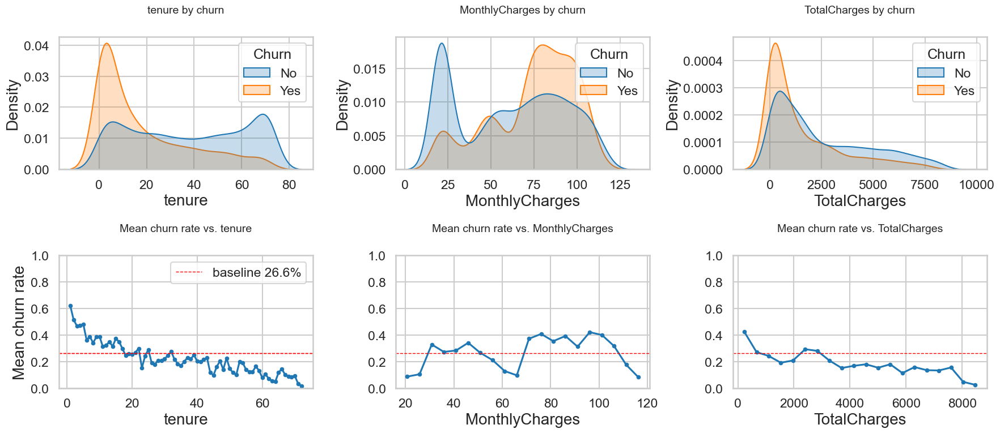
Top: distribution split by churn. Bottom: mean churn rate against the
same axis, so peaks above can be read against turning points below.
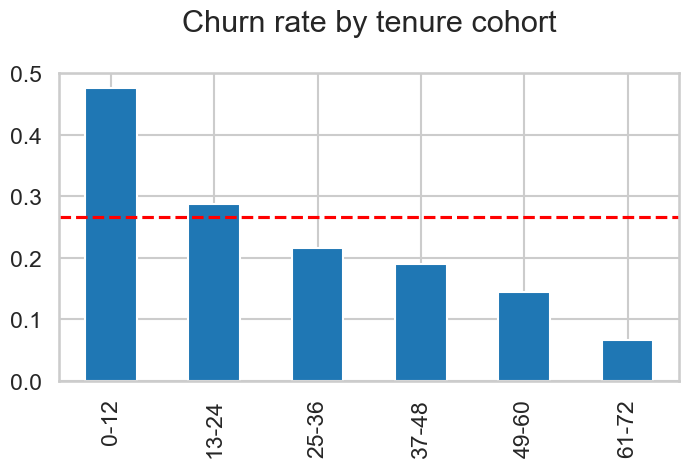
tenure — 12-month cohorts
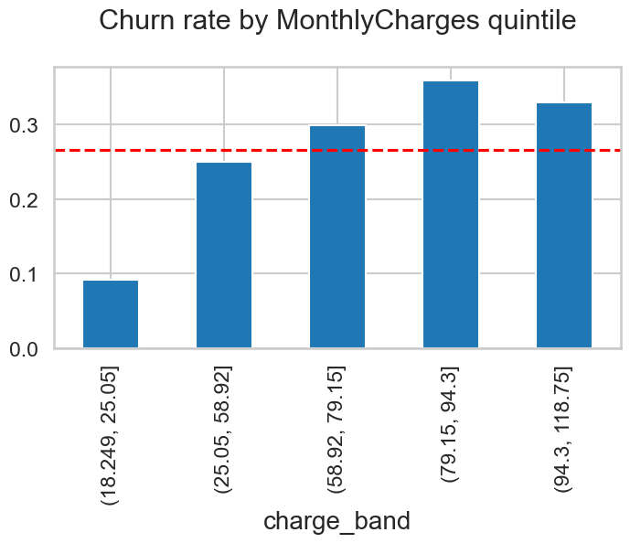
MonthlyCharges — quintiles
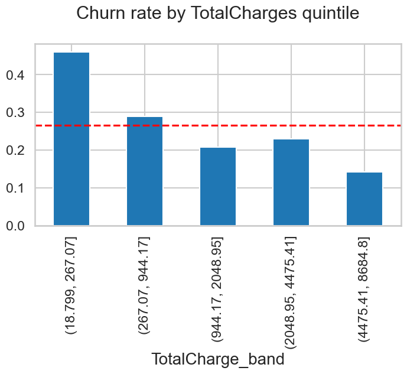
TotalCharges — quintiles
Churner profile: low tenure, high MonthlyCharges, low TotalCharges — the last a
symptom of leaving early, not a cause.
MonthlyCharges — rises, then turns back down: 9.0% → 24.9% → 29.8% →
36.0% → 32.8%. The top quintile ($94+) churns less than the fourth.
TotalCharges — mirror image of tenure:46.0% → 28.7% → 20.7% →
22.8% → 14.1%. The cheapest quintile is the newest.
3 · Multivariate Analysis
Features in combination.
Demographic Analysis
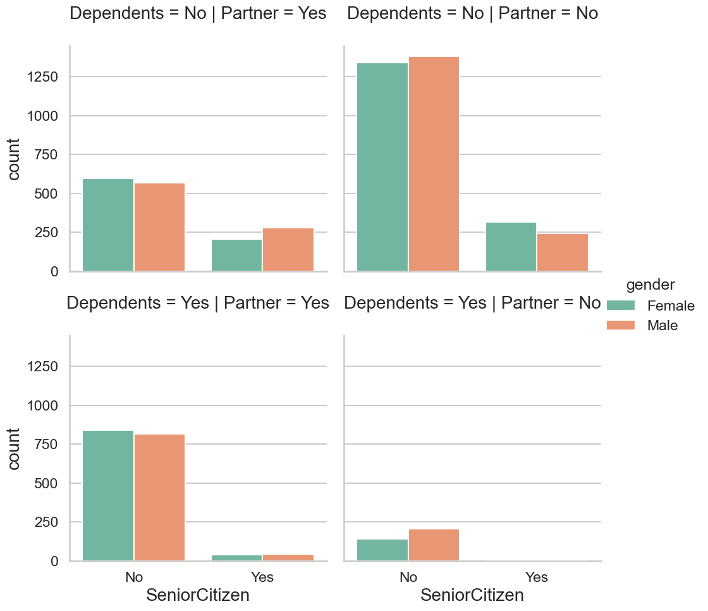
Customer counts per subgroup
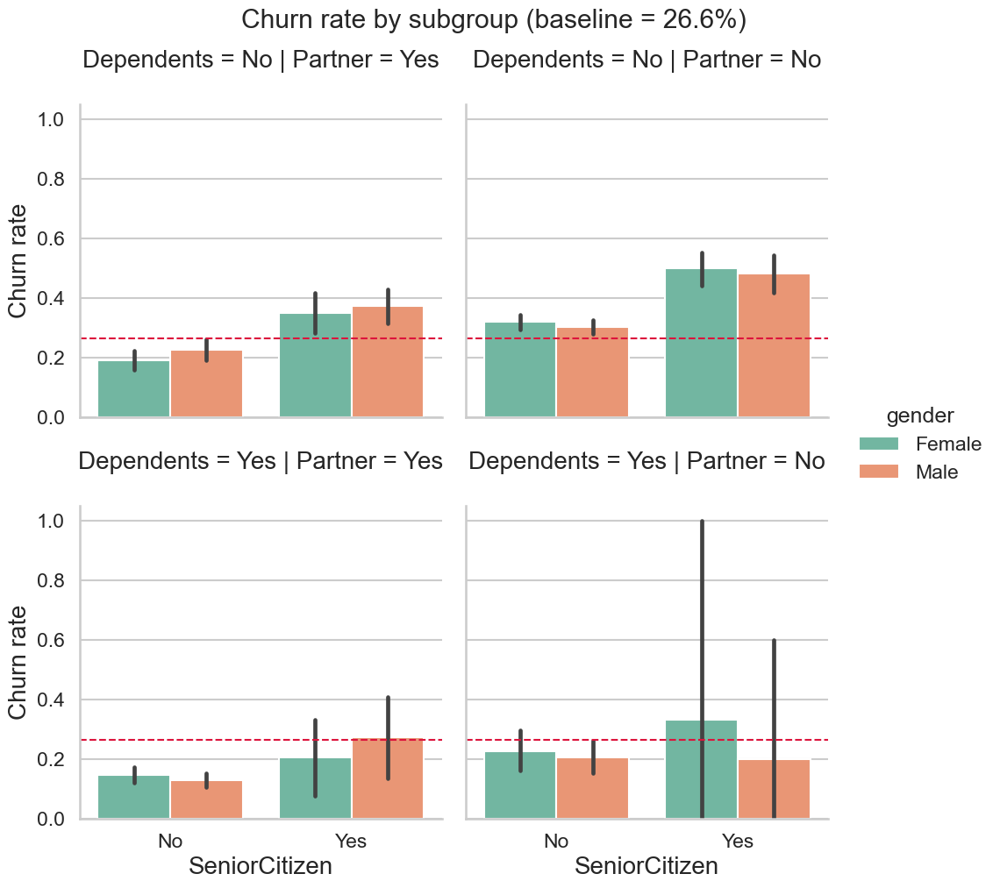
Churn rate per subgroup, with confidence intervals
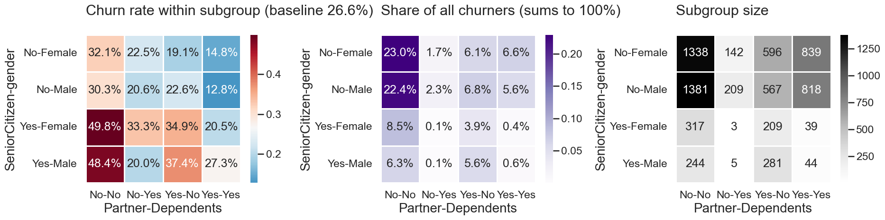
The same 16 subgroups as a heatmap trio — rate, share of all churners,
and segment size
Rate ≠ volume. The worst cell (49.8%) holds 317 customers and
8.5% of churners; its non-senior neighbours churn at 30–32% but hold
2,719 customers and 45.4%.
Read the error bars first. The senior + has-dependents cells span 0–100% — they
contain 3–5 customers.
60.2% of churners have no partner and no dependents — the No-No column
of the middle panel, added up: 23.0 + 22.4 + 8.5 + 6.3. And that group is already 46.6% of
all customers (1,338 + 1,381 + 317 + 244 = 3,280 of 7,032).
The sharpest cell in Part 1: month-to-month + paperless + electronic check, months
0–12 → 67.8%, 701 customers, 25.4% of all churners. With months 13–24 (55.0%), one
persona covers a third of all churn.
Every two-year contract cell is 0.0%.
Service Analysis
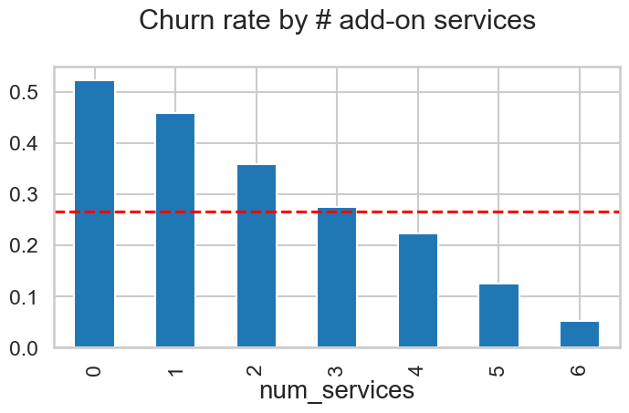
Churn rate by num_services, the count of the six optional
add-ons — restricted to customers with internet service
(InternetService != 'No')
Strictly monotone among customers who have internet: 0 → 52.2%,
1 → 45.6%, 2 → 35.7%, 3 → 26.7%, 4 → 22.2%, 5 → 12.4%, 6 → 5.1%. A ten-fold spread
from one engineered feature.
Charges Analysis
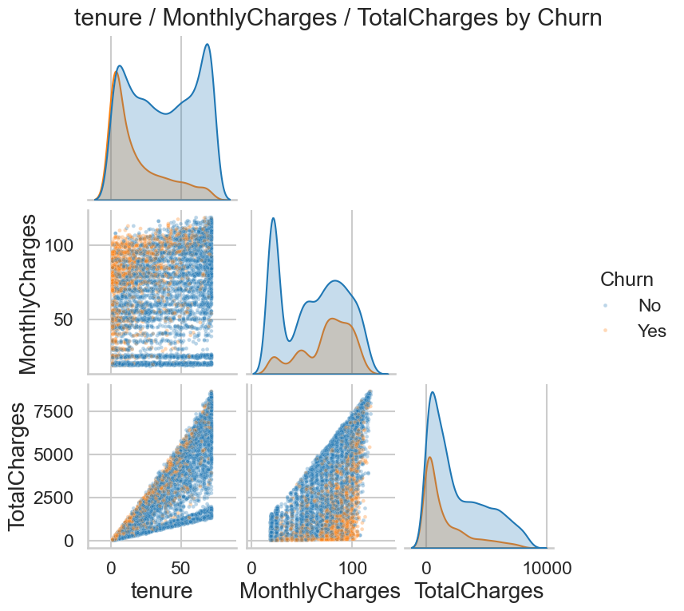
tenure / MonthlyCharges / TotalCharges pairwise, coloured by
churn
Churn sits in the upper-left corner of tenure × price — short tenure and a
high bill. Long-tenure customers paying $100 stay.
Collinearity warning: TotalCharges is nearly determined by tenure ×
MonthlyCharges.
4 · Feature Correlation
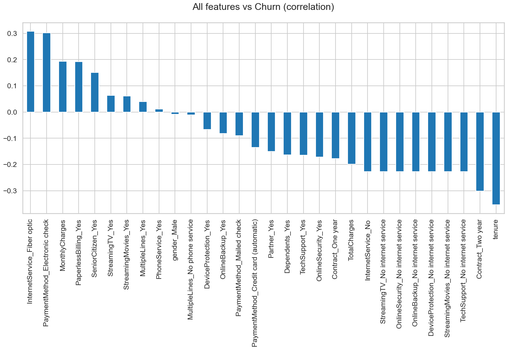
Every one-hot feature ranked by correlation with churn
Down: tenure −0.35, two-year
contract −0.30, the six no-internet dummies −0.23, TotalCharges −0.20, one-year
contract −0.18, online security −0.17, tech support −0.16.
Flat: streaming TV / movies +0.06, MultipleLines +0.04, PhoneService +0.01, gender
−0.01.
Part 1 Key Takeaways
Who churns, against the 26.6% baseline:
The one segment to act on — 67.8%. New month-to-month customers on paperless
billing and electronic check, months 0–12. 701 customers, 25.4% of all churners
— one persona, a quarter of the problem.
Strong single flags, each well above baseline:
Internet customers with zero add-ons — 52.2%
First-year customers — 47.7% (still 28.7% in year two)
Electronic check — 45.3%
Month-to-month — 42.7%
Fiber optic — 41.9% (vs 19.0% on DSL)
No OnlineSecurity — 41.8%; no TechSupport — 41.6%
Paperless billing — 33.6%
Short tenure and a high bill — the upper-left corner of tenure × price
Weak flags — real, but not actionable. Seniors 41.7%, no partner 33.0%, no
dependents 31.3%. And rate ≠ volume: the worst demographic cell (49.8%) holds 317 customers and
8.5% of churners, while its 30–32% neighbours hold 2,719 and 45.4%.
No signal at all: gender, PhoneService, MultipleLines, StreamingTV /
StreamingMovies.
Who stays. Two-year contract 2.8% (0.0% in the first 24
months), six add-ons 5.1%, tenure past five years 6.6%, no internet service 7.4%, automatic
payment 15–17%.
Part 2 — Predictive Modelling
From "who left" to "who is about to"
Model Pipeline
Part 1 explained churn in hindsight. Part 2 turns those drivers into a model that scores a
current customer, so the retention team gets a ranked call list instead of a report.
Seven algorithms, all tuned under one shared protocol, all scored on the same untouched test set —
1,407 customers, 374 of them churners:
Data preprocessing. Dummy encoding → 34 columns, a stratified 80/20 split into
5,625 train / 1,407 test, then StandardScaler; resampling (SMOTE) was
tested and dropped.
Imbalance by weighting.class_weight='balanced',
scale_pos_weight=2.76 for XGBoost / LightGBM, auto_class_weights for
CatBoost — so the 0.5 cut-off already sits at a recall-oriented operating point.
Hyperparameter tuning. Grid and randomised search for the classical models,
Bayesian optimisation with Optuna for the boosting libraries — every search scored
on the same 5-fold stratified CV.
Calibration, then delivery. Isotonic calibration on the winning model, then a
ranked risk list with tiers.
Why accuracy is the wrong metric
here.
Predicting "nobody churns" scores 73.4% and is worth nothing. Every search therefore
optimised ROC-AUC — threshold-free, so it measures how well a model ranks
customers by risk. Recall and precision are read after the fact, at a cut-off the business
owns.
Model Benchmark
Best tuned configuration per algorithm, scored on the untouched 1,407-customer test set at the default
0.5 cut-off, sorted by ROC-AUC:
Model
Accuracy
Precision
Recall
F1
ROC-AUC
LightGBM
0.7356
0.5016
0.8155
0.6212
0.8437
XGBoost
0.7299
0.4951
0.8128
0.6154
0.8416
Random Forest
0.7491
0.5183
0.7941
0.6272
0.8405
CatBoost
0.7285
0.4935
0.8102
0.6134
0.8393
Logistic Regression
0.7249
0.4893
0.7968
0.6063
0.8343
Decision Tree
0.7008
0.4649
0.8316
0.5964
0.8271
AdaBoost
0.7164
0.4800
0.8021
0.6006
0.8229
What the Models Are Actually Using
Two different algorithms, two different importance definitions, one model-agnostic check: does either
of them disagree with Part 1?
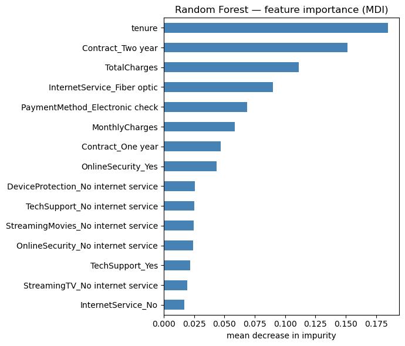
Random Forest — mean decrease in impurity (MDI): magnitude
only
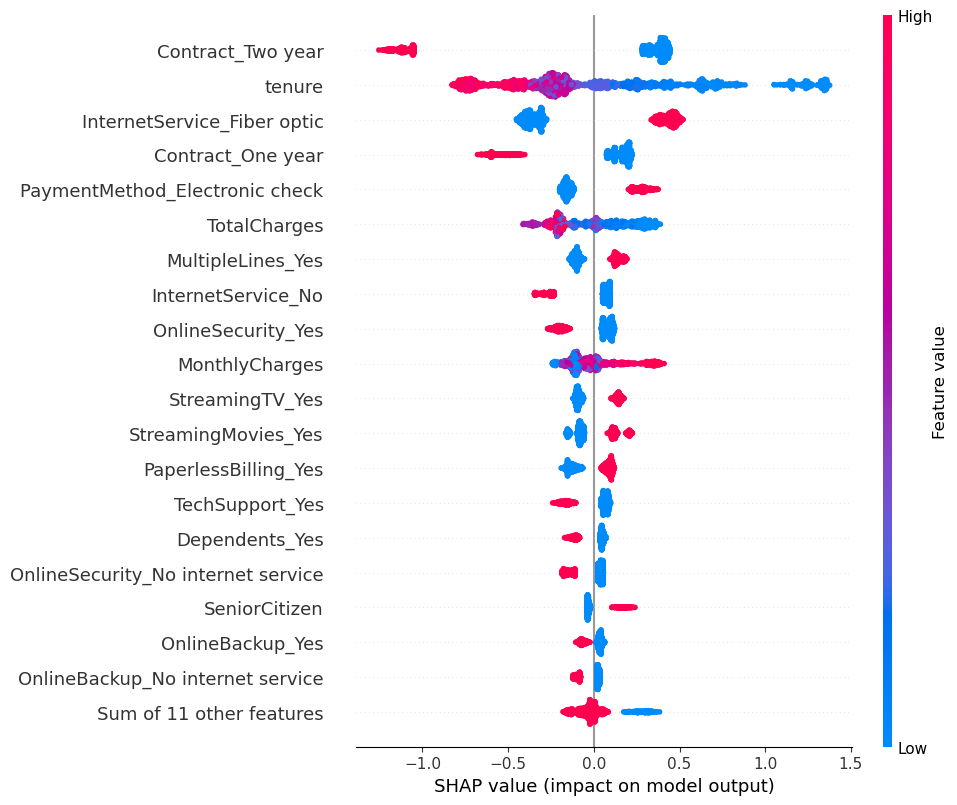
LightGBM — SHAP beeswarm: direction and magnitude, per
customer
Same top five, near-identical order — tenure, Contract_Two year, TotalCharges,
Fiber optic, Electronic check. Two unrelated algorithms, exactly the drivers Part 1
flagged.
SHAP adds the sign. A two-year contract pushes churn down by up to 1.3
log-odds; low tenure and fiber optic push it up. MDI gives magnitude only — which is why it
cannot be printed on a call sheet.
Two caveats. Dummies understate their parent feature (Contract is split across two
columns), and MDI favours columns with more split points, flattering the three continuous features
against 31 binaries.
The bottom is Part 1's null list — streaming, MultipleLines, PaperlessBilling — and
gender appears in neither chart.
From Probability to Action
Isotonic calibration cut the Brier score from 0.1691 to 0.1372 at unchanged ROC-AUC —
so a score of 0.60 really means 60%, and the tiers can carry money. Value at risk is defined as
MonthlyCharges × 12 months × 30% margin × probability: